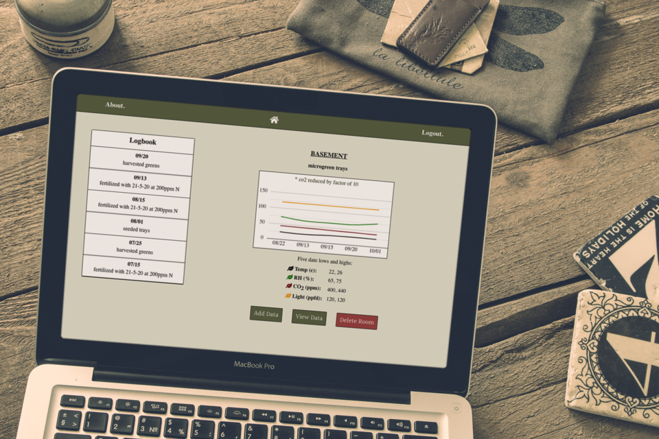

Projects
Cultivate

A data logging application to track environmental factors for plant and mushroom grow spaces.
Technologies used:
Booksplorer

Create a personalized reading list based on your favorite books. Just enter three of your favorite titles to get started.